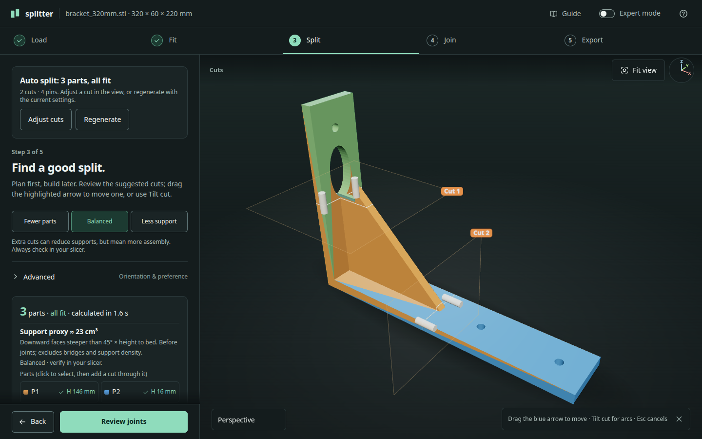
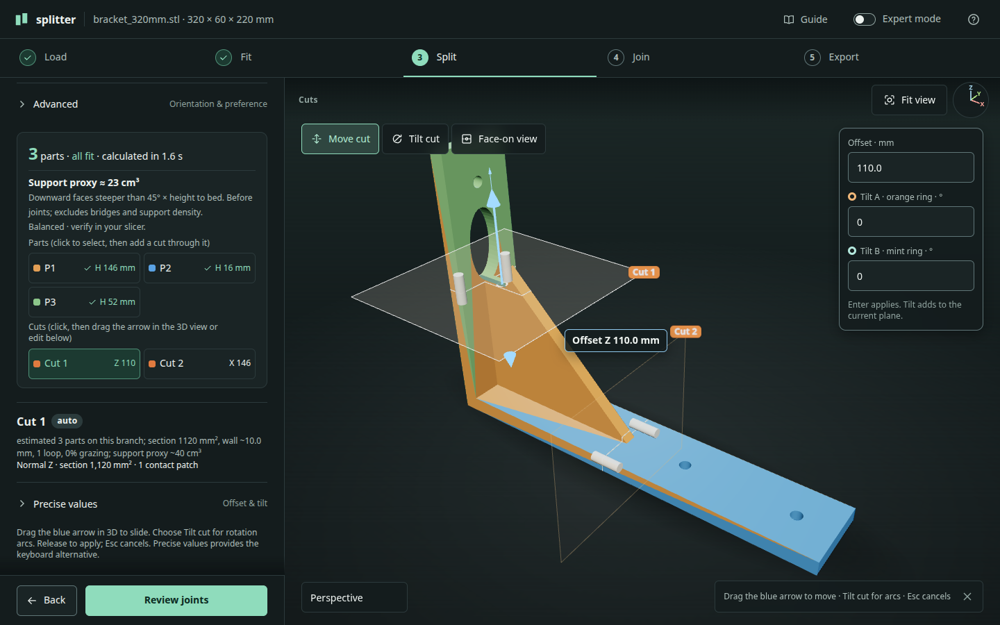
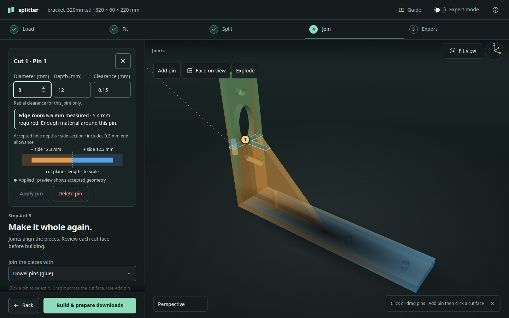
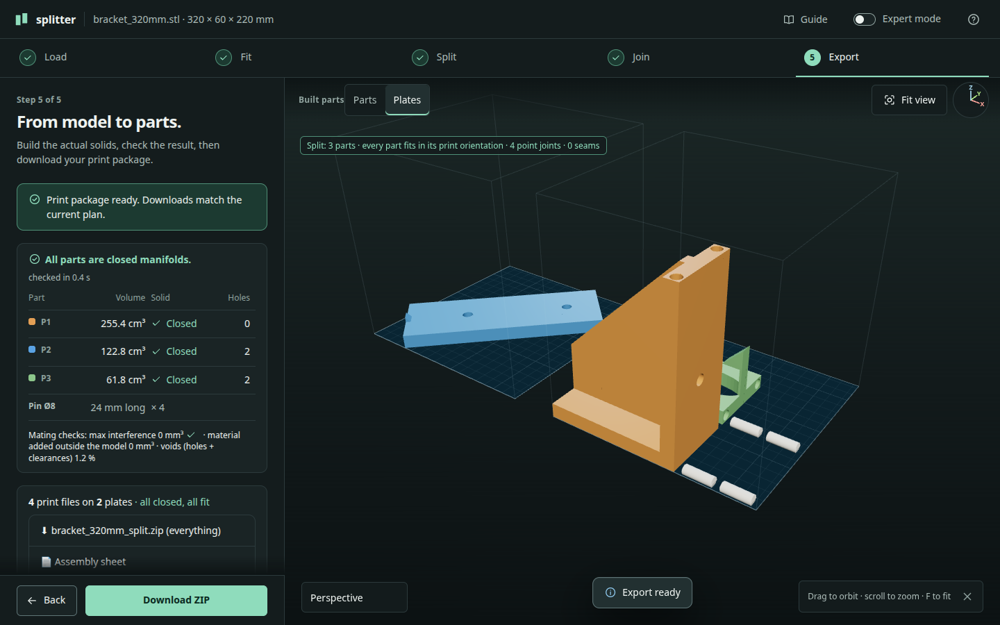
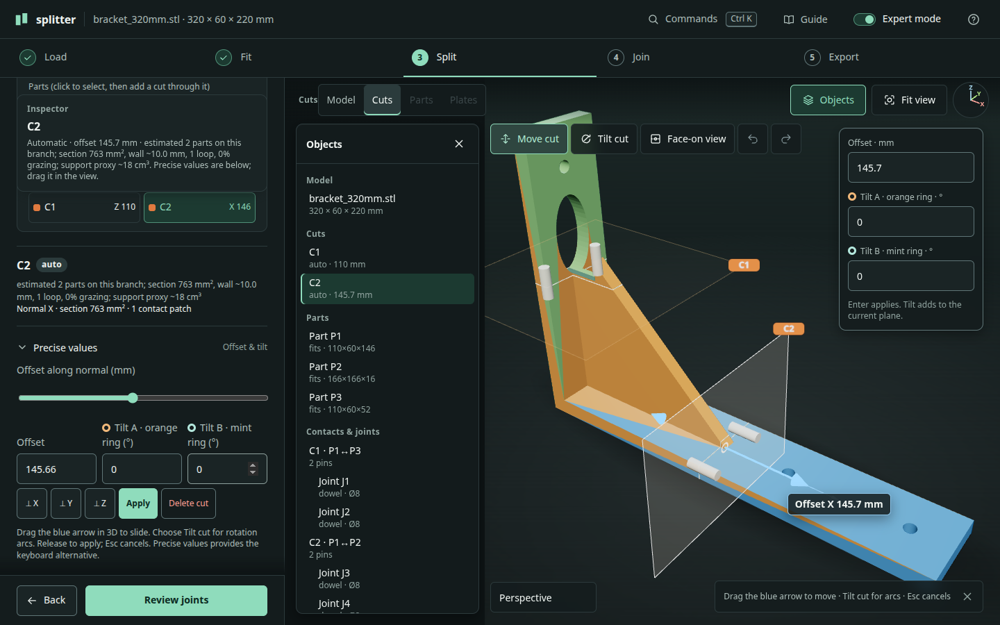

Guide
Splitter
Splitter cuts a model that is too big for your printer into pieces that fit, adds joints on the cut faces, and exports the parts and plates for your slicer. It runs in your browser; in browser mode the model is not uploaded.
01Your first split
Try the 320 mm bracket sample before using your own model. It’s large enough to need cuts on a Prusa MINI, and simple enough to see what each step does.
- Load. Choose an STL, OBJ or 3MF file, or drop it anywhere. Loading opens Fit. Load shows the model summary and repair report, with Replace and Remove.
- Fit. Check the named printer, exact size comparison and reserved margins. The blue box is usable build space; red stripes mark geometry outside it. Choose Plan cuts.
- Split. Plan cuts plans the cuts and opens Join when all parts fit. Open Split to inspect or edit the cuts. The default preference is Balanced.
- Join. The default is glued dowel pins. Select a cut face, read the warnings and edit pins in 3D. Face-on view isolates the section. The precision map is optional.
- Export. Choose Build and export at Join, then download the ZIP. Export also has separate Build parts and Export files buttons. Open the plates in a slicer before printing.
The button at the bottom runs the next step. Use the numbered steps to go back; each shows whether it is done, current, available or blocked. Expert mode opens every Advanced section and keeps your work. You can also open one Advanced section at a time.
Layout
The 3D view fills the screen; the steps sit beside it on a desktop and below it on a phone. Fit view reframes the model, and the X/Y/Z triad beside it shows which way the camera faces (X width, Y depth, Z height). The gesture hint at the bottom of the view can be dismissed and stays dismissed. On a phone, each step starts as one summary line, such as “76.0 mm too wide”, with the next action underneath. Choose Details for the full explanation and settings; the choice is remembered.

02Printer & fit
Build volume and joint clearance are different. Build volume decides whether a piece fits on your printer. Clearance decides whether two printed connections fit together.
- Margin
- Space kept free at both X and Y edges and above the model. A 180 × 180 × 180 mm printer with a 3 mm margin has 174 × 174 × 177 mm of usable space.
- Nozzle
- Used when estimating minimum walls and initial clearances. Choose your actual nozzle, not just the printer’s default.
- Minimum piece size
- A lower bound intended to avoid tiny fragments. It is not a promise that every thin feature will print reliably.
- Radial clearance
- Clearance is per side. A 5 mm peg with 0.15 mm radial clearance needs a nominal 5.30 mm round socket. Printing can still change the fit.
For an unlisted printer choose Custom volume, then enter its X, Y and Z. Changing printer dimensions or fit settings makes the old plan stale: plan cuts again before exporting.
Profiles
Beside the printer, Profiles… → Save as… saves a name for the volume, nozzle, margin, minimum piece size, joint style and five fit clearances. Models, cuts, scale, orientation and support preference are not included.
Selecting a profile applies it and replaces any unsaved profile edits. Changes show Modified · Save to keep; use Save to keep them in that profile. Reloading still restores your last-used settings, including unsaved edits. Rename changes the name; Delete confirms first and keeps the current settings. Reset defaults does not delete profiles.
Profiles live only in this browser on this site. Export the current or all saved profiles to splitter-profiles.json for a backup or another device. Import adds copies, numbers matching names and reports any adjusted values. Invalid files and negative or non-finite values are rejected; unknown printers become custom volumes. Nothing is uploaded. Clearing browser data also removes profiles.
03How splitting works
The planner checks print orientations and looks for planar cuts that turn the model into fitting pieces. It measures the actual contact areas between touching pieces, then puts suitable joints inside those areas.
Fewer parts prioritises a simpler assembly. Less support allows extra cuts if they reduce the support estimate. Balanced is a starting point, not a universal optimum. Changing the preference does not replace a plan until you plan cuts again.
The support proxy estimates downward surfaces steeper than 45° multiplied by their height above the bed. It excludes bridges, joint geometry and slicer support density. It is not measured filament consumption or print time.
Editing cuts
Select a cut directly in 3D or use its labelled button in Split. Drag the arrow along the cut’s normal. Choose Tilt cut and drag a rotation arc to tilt it. The outlined translucent plane extends beyond the model; its centre marker and normal arrow show what moves. The nearby readout names the offset axis or signed rotation axis (degrees during a drag are a change from its starting pose). Release to commit, or Esc to cancel. For keyboard editing, open Precise values, change offset or Tilt A/B, and Apply. Tilt A/B rotates around the face’s local axes; the X/Y/Z buttons align the plane with a model axis.
Select a part to add a cut through its centre. Delete a cut to merge its descendants. If a manual change leaves an oversized part, use Auto-complete. Running automatic splitting again replaces manual cuts; use the manual controls when you want to preserve them.
After an automatic split, a result card states the parts, cuts, pins and any joint warnings. Adjust cuts selects the first cut in the view; Regenerate plans again with the current settings. While a cut is selected on a desktop, its Offset, Tilt A and Tilt B fields sit in the corner of the view. Tilt A belongs to the orange ring and Tilt B to the mint ring; type an angle and press Enter to add that tilt to the current plane. Drags snap to 1 mm and 5°; hold Shift for 0.1 mm and 1°.

04Choosing joints
Start with the assembly method, then check whether the model has enough material for it. A thin shell and a solid bracket need different connections.
| Choose | When it helps | Watch for |
|---|---|---|
| Glued dowels or filament pins | Simple alignment; replaceable separate pins | Glue access and available hole depth |
| Integrated or keyed pegs | Fewer loose pieces; keyed shapes resist rotation | Peg print orientation, thin roots and fit |
| Finger, tongue or lap seams | Distributed contact along thin walls | Wall thickness and assembly direction |
| Press or snap fit | Assembly without glue | Material stiffness, tolerances and repeated flexing |
| Magnets | Removable connections | Actual magnet size, polarity and retention |
| Dovetail | A sliding mechanical connection | Enough room to slide pieces together |
| Inserts, screws or bolts | Serviceable mechanical fastening | Fastener dimensions and access for tools |
The style selector re-places automatic joints on the current cuts; manually locked joints stay. If the chosen joint cannot fit safely, the planner may substitute another style. Read the warning and reason. Force (for example “Force dowels”) relaxes the geometric limits; it does not make the connection physically proven.
Place joints on the model
The selected pin’s card reports edge room: the measured distance from the pin to the nearest edge or hole, against what this joint needs. If it is too close, drag the pin toward the middle of the face or choose a smaller diameter.
Select a cut, then Add pin and click its material surface. Drag pins across that face; a red ring and explicit warning reject positions outside the material, in a hole, too close to an edge, or too close to another pin. These are live planar checks; the planner checks drilling depth after release.
Click a pin for its diameter, depth and individual radial clearance. Apply or discard field changes before building. Selecting a different Fit or joint type in Advanced restores its preset clearance. In Join, unlit discs show true-size pin footprints. A gold selection ring and number match the inspector and the Pin list. The side-section diagram shows accepted hole depth into both mating pieces; dowel/press holes include a 0.3 mm end allowance. Orbit out of Face-on view to see translucent depth envelopes in 3D. These cylinders illustrate depth, not the full hardware or seam shape; use Explode to inspect the actual built solids. Apply is disabled when nothing changed. When fields are edited, “Not applied” means the preview still represents accepted geometry, not the draft. On a phone, the inspector scrolls between its fixed heading and always-visible Apply/Delete row. The popover hides while dragging so it cannot cover the target.
Undo / Redo restores up to 20 accepted cut/joint plans and invalidates built/downloaded artifacts. It does not undo file loading or printer/style setting changes; those start a new history. History is not a saved session.
Precision map
Expand Precision map, then choose Zoom & edit. Coloured areas are contacts between two parts. The distance field shows room to the boundary. In Add mode, green means enough surrounding wall for the selected type; depth still needs checking. Drag a joint to reposition it, or select it and use Shift+arrows.
Use the contact inspector to adjust seam depth, finger width, clearance and male side. Select a point joint to edit type, fit, diameter and depth—or fastener size and screw length. Manual changes keep that contact’s other joints in place.

05Printing & assembly
Build parts performs the solid-geometry cuts and booleans. A coloured plan is not the final mesh. Review the manifold and mating checks before exporting. A successful geometric check does not establish strength, manufacturability or physical fit.
Export shows one output status. If you change the plan after building, it says Plan changed since the last build, the Export step reads “Rebuild needed”, and the button becomes Rebuild parts; older parts and downloads are never shown as current.
Build and export does both jobs; separate buttons are also available. Export files creates a ZIP with individual STL files, 3MF files for parts and packed plates, and an HTML assembly sheet. Downloading the ZIP is a separate step.
- Open each plate in your slicer. Check supports, bed adhesion, overhangs, small features and orientation.
- Print the joint coupon before a long job. Dimple count identifies the clearance step; the download report lists each value.
- Dry-fit the assembly before glue. Confirm labels, pin lengths and the order of assembly.
- Check magnets and fasteners against the actual hardware. Plan access before closing an assembly.

06Large meshes
Large files can exhaust a browser tab’s memory. Splitter estimates the work before loading, shows the current stage and elapsed time, and may simplify the mesh for planning. Time and memory figures are estimates, not progress percentages or guarantees.
- The Load report says whether simplification happened and gives measured maximum/mean deviation over sampled points. A sampled deviation is not an exhaustive bound on every surface point.
- If the original was retained, Export defaults to cutting the full-detail original with the same planes and joints. The source checkbox lets you choose the simplified mesh instead.
- If the original was too large to retain, the export uses the simplified mesh and says so.
- Use full detail is available when the memory estimate permits it. It reloads the model and can take much longer.
- Cancel during loading or planning stops the planner worker. Cancelling planning may first restore the model; wait for restoration before editing.
- A broken mesh can fail because it is not a closed solid, even if memory is available. Read the defect report. Repair it externally if automatic repair cannot resolve it.
For a file refused by the browser, reduce it in a mesh tool or use the repository’s command-line planner. Closing other tabs can free resources, but does not remove the browser’s own limits.
07Keyboard controls
Tab and Shift+Tab move between controls; Enter or Space activates buttons. Automatic loading and the primary action move focus to the next meaningful step. File selection, all settings, cut editing, joint editing and downloads are available without a mouse.
- 3D view (focus the canvas)
- Arrows orbit; Shift+arrows pan; +/− zoom; F fits. 1/2/3/4 selects Model/Cuts/Parts/Plates when available. Use cut/part buttons in Split for object selection and Precise values for offset/tilt. In Join, [ and ] select pins; Shift+arrows nudges the selected pin by 0.5 mm. Ctrl/Cmd+Z undoes an accepted edit; Shift+Ctrl/Cmd+Z redoes it. Esc cancels a viewport drag without submitting.
- Joint map
- Arrows select joints; Shift+arrows nudge the selected joint by 0.5 mm; Alt+arrows pan; +/− zoom; 0 fits. A toggles Add, Enter places at the view centre, Delete removes the selected joint. Tab leaves the map. Escape closes the editor and returns focus.
- Commands and objects (Expert mode)
- Ctrl+K (Cmd+K on macOS) opens the command search: type part of a step, action, cut, part or joint name; arrows choose; Enter runs it. Commands that are unavailable stay listed with the reason, for example “Build parts first”. In the Objects list, Up/Down/Home/End move, Enter selects, and Esc closes the list.
- Reduced motion
- The system reduced-motion preference disables camera damping and progress animation. Work continues with text updates.

08Questions & limits
Why does the model look the wrong size?
STL files do not store units. Use Load → Advanced to set source units or scale. All working dimensions are in millimetres. Confirm a known dimension before splitting.
The whole model is striped. Did the split fail?
The Fit/Model view shows the unsplit model in its current pose. The split result reports whether each piece fits in its chosen print orientation. Those are separate checks.
Why is a joint different from the style I chose?
The face may be too thin or shallow. Read the substitution warning. Select that contact to choose a seam, a keyed connection, a forced attempt, or a return to automatic placement.
Can I save and reopen the editing session?
Printer and preference settings persist locally. The loaded mesh, cut tree and joint edits do not persist across reloads. Keep your source file and download the completed package before closing the page.
Does “manifold” mean safe to manufacture?
No. It means the mesh passed geometric checks for a closed solid. It says nothing definitive about material strength, dimensional accuracy, loads, slicer behaviour or assembly access. Verify critical parts independently.
What stays private?
In the static browser app, model processing happens in local Web Workers. A separately hosted server-mode instance processes models on that server; the Load privacy statement identifies the mode. External manufacturer/source links open external sites.
What does Expert mode change?
Only the amount of detail shown, and the tools for reaching it. Every Advanced section opens. An Objects list (model, cuts, parts, contacts and joints) sits over the left of the view, an Inspector heading names the current selection above its editor, and Commands (Ctrl K) finds any action. It does not change the algorithm, replace the model, or create a separate set of settings. The five-step workflow remains, and switching keeps your step and plan.